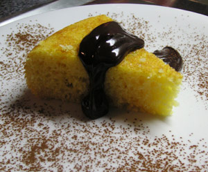

Moelleux au Noix de Coco
5 von 6Mix 60 gr shredded coconut, one envelope baking powder, 130 gr sugar, 60 grams flour. Apart, melt 60 grams of butter with 2 tsp rum. To dry ingredients, mix four eggs, then one cup yoghurt, preferably coconut flavoured. Mix with cooled butter and bake in preheated oven (180° C) for 25 minutes, and serve with cocolate ganache (half dark chocolate half hot crème fraiche), powder with cocoa.
